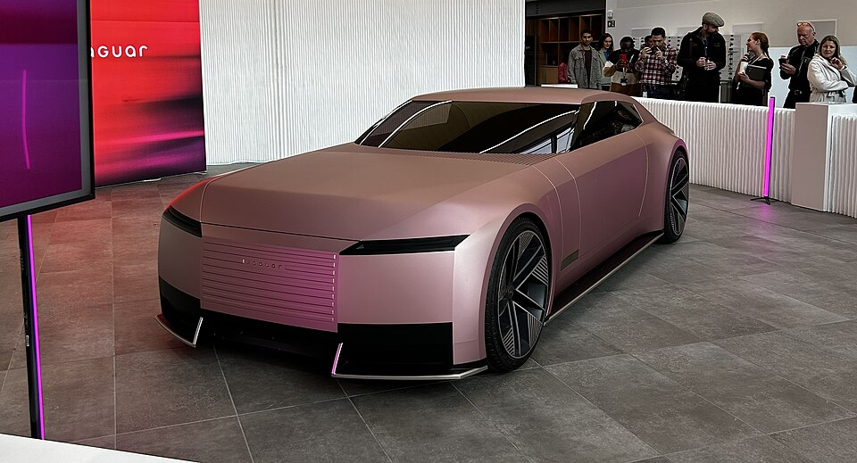

Design language
The form is built around minimal lines, strong volume, and a front profile that feels architectural. That makes the car look premium and modern without relying on too many surface details.

Electric Concept
The Jaguar Type 00 stands out with ultra-clean body surfacing, dramatic proportions, and a futuristic luxury presence that feels intentionally bold rather than overly busy.
The form is built around minimal lines, strong volume, and a front profile that feels architectural. That makes the car look premium and modern without relying on too many surface details.
Compared with more aggressive concept cars, the Jaguar feels calmer and more refined. Its strength comes from proportion, stance, and restraint rather than visual clutter.
On the homepage, this car works well as one of the strongest visual anchors because the clean silhouette reads clearly even in a narrow accordion panel.